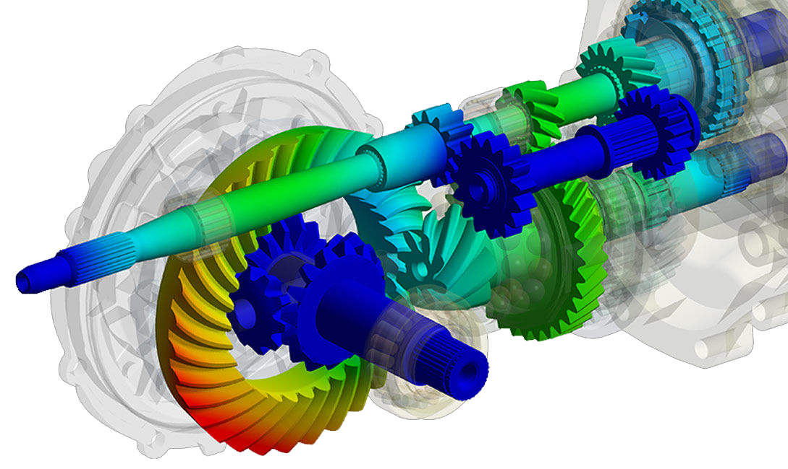
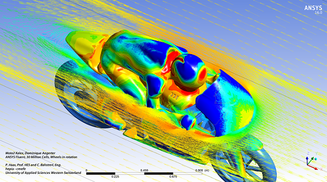
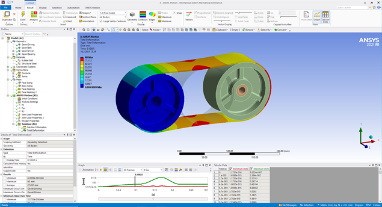
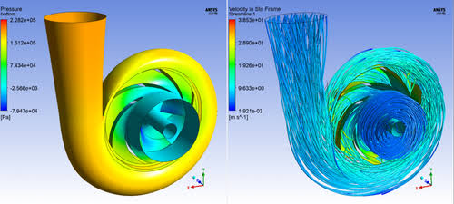
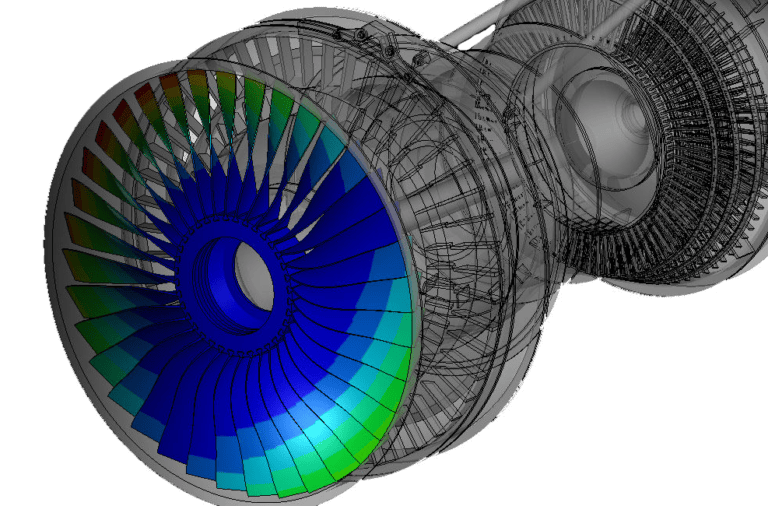

Análise estrutural
Tensões, deformações, contatos, não linearidades, fadiga, estabilidade, fratura e resposta de componentes e conjuntos.
- Estática linear e não linear
- Fadiga e vida útil
- Flambagem e contatos
Simulação numérica para compreender desempenho, investigar riscos e direcionar melhorias com base em física e critérios de engenharia.

Cada estudo parte de uma pergunta de engenharia: onde está o limite estrutural, como o fluxo se distribui, qual região aquece, como o sistema vibra ou o que acontece em um evento extremo. A Sirius transforma essa pergunta em um modelo, verifica o comportamento numérico e traduz os resultados em recomendações para o projeto.
O conjunto exato de ferramentas e solvers é definido após a avaliação do escopo e da disponibilidade de licenças aplicáveis.
Tensões, deformações, contatos, não linearidades, fadiga, estabilidade, fratura e resposta de componentes e conjuntos.
Escoamentos internos e externos, perdas de carga, distribuição de pressão, turbulência, mistura e desempenho fluidodinâmico.
Condução, convecção, radiação e interação entre temperatura, materiais, fluxo e resposta mecânica.
Frequências naturais, resposta harmônica, cargas transientes e comportamento de sistemas rígidos e flexíveis em movimento.
Fenômenos de curta duração com contato severo, grandes deformações, falha de material e elevada não linearidade.
Campos elétricos e magnéticos, máquinas elétricas, integridade térmica de eletrônicos e problemas de RF conforme a necessidade.



Identifique concentrações de tensão, instabilidades, zonas de recirculação, aquecimento e modos críticos ainda no ambiente virtual.
Avalie materiais, espessuras, geometrias, condições operacionais e conceitos com critérios técnicos consistentes.
Use os resultados para selecionar condições críticas, posicionar sensores e planejar protótipos físicos com maior foco.
Registre hipóteses, propriedades, cargas, critérios e resultados para construir rastreabilidade ao longo do desenvolvimento.
Um estudo confiável exige mais que executar um solver. Nosso fluxo estrutura a pergunta, explicita as premissas e inclui verificações proporcionais ao risco da decisão.
Objetivo, critérios de aceitação, condições de operação, dados disponíveis e decisão que o estudo deve apoiar.
Revisão ou simplificação da geometria, materiais, contatos, cargas, condições de contorno e plano de análise.
Estratégia de discretização, execução do solver, monitoramento de convergência e tratamento das não linearidades.
Checagem de balanços, sensibilidade de malha e parâmetros críticos, coerência física e limitações do modelo.
Resultados relevantes, resposta à pergunta original, recomendações de projeto e próximos passos de validação.
Memorial de premissas, materiais, cargas e condições de contorno.
Descrição do modelo, malha, solver e verificações realizadas.
Resultados gráficos e quantitativos nos pontos relevantes.
Conclusões, limitações e recomendações orientadas ao projeto.
Arquivos de modelo e dados adicionais conforme contratação e licenciamento.

O estudo começa com uma avaliação técnica. Geometria, qualidade dos dados, fidelidade necessária, riscos, prazos e recursos computacionais determinam a estratégia de simulação.
Apresentar meu desafio ↗